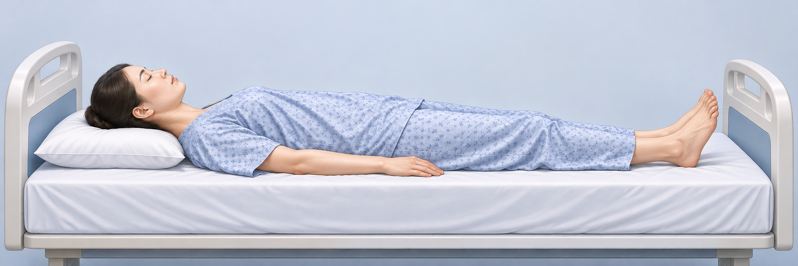

와상환자 욕창 전문간병사
증상이 나타나는 이유와 환자에게 보이는 변화를 중심으로, 예방 지원부터 악화 신호 대응·보고·인계까지 익히는 50분 수업 원고입니다. 환자별 계획을 실행하는 2급 기초와 복합 상황을 조정·지도하는 1급의 판단을 구분했습니다.
대상: 간병사 교육생 · 수업 구성: 핵심 설명·관찰·기술 약 30분 + 증상 사례판단·경력자 통합 연습 약 20분
이 교안은 간병사의 관찰과 일상지원 교육안입니다. 욕창 진단·단계 분류·상처 깊이 측정·드레싱·연고나 약 선택·치료 및 영양 처방은 의료진의 업무입니다. 피부에 새 변화가 보이면 문지르거나 눌러 시험하지 말고, 환자를 안전하게 지지하고 압력을 덜어 담당자에게 알립니다. 기관의 감염관리 지침과 환자별 돌봄 계획이 우선합니다.
1장 · 압박손상은 어떤 증상으로 시작하는가 (약 3분)
욕창 또는 압박손상은 한 부위가 오랫동안 눌리거나, 압박에 마찰·전단이 더해져 피부와 그 아래 조직이 손상되는 문제입니다. 간병사는 상처의 이름을 붙이거나 단계를 판단하지 않습니다. 대신 환자가 말하는 통증과 불편, 눈으로 보이는 피부 변화, 언제부터 달라졌는지를 빠짐없이 관찰하고 연결합니다. 피부가 열리기 전에도 변화가 먼저 나타날 수 있으므로 “상처가 없으니 괜찮다”고 단정하지 않습니다.
위험은 한 가지 요인만으로 설명되지 않습니다. 몸을 스스로 돌리기 어려운 부동, 감각 저하나 의식 혼란, 실금과 땀으로 인한 습기, 영양·수분 섭취 저하, 부종, 혈액순환 문제, 발열이나 급성 질환, 의료기기 압박이 겹칠수록 피부가 견디기 힘들 수 있습니다. 환자가 아프다고 말하지 않는다고 통증이 없다고 볼 수도 없습니다. 감각이 둔하거나 의사소통이 어려운 분은 얼굴 표정, 몸을 움츠리는 모습, 갑작스러운 거부, 평소와 다른 안절부절을 함께 봅니다.
자주 압박받는 곳은 천골과 엉덩이, 발뒤꿈치, 복사뼈, 무릎 안쪽, 팔꿈치, 어깨뼈, 귀 뒤, 머리 뒤와 기기 가장자리입니다. 자세에 따라 닿는 부위가 바뀝니다. 침대에 누운 환자와 휠체어에 앉은 환자의 압박 지점도 다릅니다. 기저귀·산소줄·보조기·고정끈의 가장자리도 확인 대상입니다. 관찰은 전신을 벗기는 행동이 아니라 계획에 따라 필요한 부위를 존엄하게 확인하는 과정입니다.
강의자가 강조합니다. “이 부위는 몇 단계 욕창입니다”라고 말하는 대신, “오전 9시 20분 체위 변경을 돕다가 천골 부위의 약 3센티미터 크기 붉은 변화를 보았습니다. 피부가 열렸는지는 확인하지 않았고, 환자는 따갑다고 말했습니다. 압박을 줄이고 간호사에게 9시 25분 보고했습니다”처럼 사실을 말합니다.
자세별 압박이 쉬운 부위를 그림과 함께 익히기
각 그림을 해당 자세 설명 옆에 배치했습니다. 그림과 부위명을 함께 보며, 환자가 취하는 자세에 따라 지지면에 닿는 곳이 어떻게 달라지는지 살펴봅니다.

바로 누운 자세 · 앙와위
압박을 살펴볼 부위: 뒤통수, 어깨뼈와 등, 팔꿈치, 천골·미골, 발뒤꿈치.
환자 피부 관찰 계획에 따라 침상과 맞닿거나 오래 눌리는 부위를 살핍니다. 발뒤꿈치는 환자별 계획에 지정된 지지 방법을 확인하고, 장치나 베개가 새로운 압박을 만들지 않는지 봅니다.
교육용 일러스트이며 피부손상이나 욕창 단계를 나타내지 않습니다.
옆으로 누운 자세 · 측위
압박을 살펴볼 부위: 귀와 머리 옆, 어깨 바깥쪽, 팔꿈치, 골반 바깥쪽의 대전자, 무릎 사이와 복사뼈.
무릎이나 발목의 뼈가 서로 닿거나 지지면에 눌리지 않는지 계획에 따라 확인합니다. 몸을 임의로 깊게 옆으로 기울이거나 베개 위치를 바꾸지 말고, 승인된 자세와 보조기구를 따릅니다.
교육용 일러스트이며 피부손상이나 욕창 단계를 나타내지 않습니다.
엎드린 자세 · 복위
압박을 살펴볼 부위: 뺨과 얼굴, 가슴, 골반 앞쪽, 무릎, 발가락 등 지지면이나 의료기기에 닿는 곳.
엎드린 자세는 모든 환자에게 적용하는 예방 자세가 아닙니다. 임상 계획으로 해당 자세가 정해진 경우에만 시행하며, 호흡·기구·피부 반응을 살피고 이상이 있으면 담당자에게 알립니다.
교육용 일러스트이며 실제 임상 지시를 대신하지 않습니다.
자세 그림을 볼 때 기억할 점
부위명은 본문과 같은 글꼴로 선명하게 넣었습니다. 그림은 압박이 생기기 쉬운 위치를 기억하는 교육자료입니다. 관찰 부위와 체위 변경 간격은 환자의 피부 상태, 통증과 편안함, 움직임 능력, 치료 계획, 사용 장비에 따라 승인된 환자별 계획을 따릅니다.
그림에 나온 부위를 눌러 확인하거나 마사지하지 않습니다. 새 통증, 색 변화, 물집, 피부 열림이나 습윤·배액 변화가 보이면 압박을 피하도록 돕고 담당자에게 보고합니다.
2장 · 환자 증상에 초점을 맞춘 관찰 (약 3분)
관찰 전에는 환자에게 목적을 설명하고 동의를 확인합니다. 커튼이나 문을 닫고 필요한 부위만 노출합니다. 장갑과 손위생 등 기관 지침을 따릅니다. 환자에게 “불편하거나 아픈 곳이 있나요?”, “평소와 다른 느낌이 있나요?”라고 구체적으로 묻고, 대답을 기다립니다. 말로 답하기 어려운 환자는 평소 반응과 비교합니다. 눈살을 찌푸림, 신음, 몸을 움츠림, 움직임 회피, 갑작스러운 초조는 기록할 단서입니다.
피부는 보이는 범위에서 색 변화, 붉음이나 어두워짐, 물집처럼 보이는 변화, 벗겨짐, 피부가 열린 곳, 부종, 습기, 삼출물이나 냄새 여부를 살핍니다. 정상 피부색이 사람마다 다르고, 짙은 피부에서는 붉은색 변화가 뚜렷하지 않을 수 있습니다. 그래서 양쪽을 비교해 새로 생긴 색 차이, 표면 변화, 부기, 환자의 국소 통증·열감 표현을 함께 보고합니다. 열감 여부를 확인한다고 의심 부위를 세게 누르거나 문지르면 안 됩니다. 사진 촬영은 승인된 절차, 동의, 보안 체계가 있을 때만 담당자가 결정합니다.
피부가 젖어 있거나 오염된 경우에는 실금·발한·상처 배액 등 원인을 간병사가 진단하지 않습니다. 언제 젖었는지, 피부 주름과 기저귀 상태, 환자 불편, 옷과 침구 오염을 확인해 알립니다. 배변·배뇨 후에는 계획에 따라 지체 없이 청결과 건조를 도와 피부가 오래 습한 채로 있지 않게 합니다. 보호제나 연고는 임의로 선택하지 않고 환자별 계획에서 지정된 제품과 방법을 확인합니다.
관찰의 중요한 기준은 “기존과 달라졌는가”입니다. 이전 기록이나 인계에서 알려진 위치·모양·불편 정도와 비교하되, 기존 손상이라며 새 변화나 악화를 정상으로 취급하지 않습니다. 새 통증, 빠르게 넓어지는 변화, 피부 열림, 물집, 출혈·삼출, 악취, 열감·부종, 발열이나 갑작스러운 전신 상태 변화가 같이 보이면 신속하게 보고해야 합니다.
3장 · 체위 변경과 이동을 안전하게 보조하기 (약 4분)
체위 변경은 일률적인 시간표만 따라 움직이는 일이 아닙니다. 환자의 위험도와 피부 상태, 통증·호흡·수면·편안함, 스스로 움직이는 능력, 치료 기구와 라인, 담당자가 정한 빈도와 방법을 확인합니다. 개인별 계획에 적힌 목표 자세와 보조 인원, 슬라이딩 시트나 리프트 등 승인된 장비, 금기 동작이 무엇인지 먼저 확인합니다. 계획이 없거나 서로 다른 지시가 보이면 간병사가 임의로 정하지 말고 책임자에게 묻습니다.
이동 전 환자에게 설명하고 동의를 확인한 뒤 침대 높이와 바퀴 잠금, 주변 장애물, 호출벨, 튜브와 배액줄의 여유를 살핍니다. 교육받은 인원과 장비를 사용합니다. 혼자 들어 올리거나 팔·다리를 잡아 끌지 않습니다. 피부가 침구에 끌리는 것은 마찰과 전단을 높입니다. 몸을 옮길 때는 승인된 보조기구와 팀 동작으로 피부 끌림을 줄이고, 환자의 얼굴과 말에 주의를 기울입니다. 통증, 숨참, 어지러움, 창백함, 불안, 줄 당김이 생기면 멈추고 안전하게 지지한 뒤 담당자에게 알립니다.
옆으로 눕힐 때는 환자별 계획에 따라 압박 부위가 직접 눌리지 않도록 베개나 지지 도구를 배치합니다. 뒤꿈치는 침구에 계속 닿지 않도록 승인된 방식으로 띄우거나 장치로 보호하되, 장치의 가장자리가 새 압박을 만들지 않는지 관찰합니다. 무릎 사이, 발목 사이, 팔과 몸통 사이에 완충이 필요한지 계획을 확인합니다. 베개를 한 곳에 급히 쌓아 자세를 고정하면 다른 부위에 압박이 집중될 수 있으니 임의로 바꾸지 않습니다.
침대 머리를 올려야 하는 호흡·흡인 예방 지시가 있으면서 미끄러짐과 전단 위험도 걱정되는 사례가 있습니다. 간병사가 둘 중 하나를 임의로 택하지 않습니다. 처방·안전계획을 그대로 지키고, 환자의 미끄러짐이나 통증을 관찰해 담당자에게 두 위험이 충돌한다고 알립니다. 1급은 확인된 계획과 장비, 인원, 환자 반응을 묶어 팀이 검토하도록 조정하고 기록합니다.
4장 · 습윤·실금·피부 청결 지원 (약 2분)
소변·대변·땀·상처 배액으로 피부가 오래 젖으면 피부가 약해지고 따가움과 짓무름이 생길 수 있습니다. 환자가 “쓰리다”, “가렵다”, “화끈거린다”고 호소하면 위치와 시작 시각, 실금과 청결 지원 여부, 눈으로 보이는 피부 변화를 살핍니다. 피부염인지 압박손상인지 간병사가 구별해 진단하지 않습니다. 압박으로 인한 문제와 습기로 인한 문제는 함께 있을 수도 있으므로 모두 구체적으로 보고합니다.
배설물 처리 시에는 먼저 설명하고 동의를 얻으며, 프라이버시를 보호하고, 장갑·손위생 등 기관 절차를 따릅니다. 피부를 거칠게 문지르지 않고 승인된 방법과 용품으로 오염을 제거한 뒤 부드럽게 말립니다. 배설 후 젖은 패드와 침구를 갈고 주름진 천이나 부스러기가 피부에 닿지 않게 정돈합니다. 체위 변경 때 시트가 말리거나 환자 몸 아래에 접혀 들어갔는지도 확인합니다.
기저귀 크기와 교체 주기, 피부 보호 제품, 세정제는 개인별 계획을 따릅니다. 연고·파우더·소독제·보습제 등을 임의로 추가하면 자극이나 다른 제품과의 문제가 생길 수 있습니다. 발진이 번지거나, 진물·통증·냄새가 새로 생기거나, 청결 지원 후에도 피부 문제가 반복되면 책임자에게 알립니다. 잦은 설사, 배뇨량 변화, 물을 마시기 어려움처럼 피부와 전신 상태에 영향을 주는 변화도 함께 보고합니다.
5장 · 지지면과 보조기구의 사용 원칙 (약 2분)
압력 재분산 매트리스나 방석은 계획의 일부이지, 체위 변경과 관찰을 대신하는 장치가 아닙니다. 장비 이름과 설정을 간병인이 임의로 바꾸거나, 고장을 분해해 수리하지 않습니다. 전원이 연결되어 있는지, 경보가 있는지, 튜브가 꺾였는지, 침구가 장치 기능을 방해하지 않는지처럼 눈에 보이는 사용 상태를 확인하고 이상을 보고합니다. 교대 중에는 장치가 정상 작동하는지와 환자 자세가 계획과 맞는지 인계합니다.
뒤꿈치 보호 장치를 쓸 때 발이 장치 안에 편안하게 놓여 있는지, 끈이나 모서리가 발목과 발등에 압력을 주지 않는지 봅니다. 장치 안쪽을 볼 필요가 있으면 계획과 교육에 따라 안전하게 확인합니다. 새 자국, 저림, 통증, 부종, 피부 색 변화가 보이면 장치를 그냥 더 조이지 않습니다. 계획된 압력 완화가 유지되도록 환자를 안전하게 지지하고 장치 문제를 담당자에게 알립니다.
휠체어에서는 골반이 한쪽으로 기울거나 몸이 미끄러져 엉덩이에 전단이 생기는 일이 있습니다. 발판 높이, 등받이, 방석은 처방·계획대로 사용합니다. 앉은 시간, 자세 유지 능력, 스스로 체중을 이동할 수 있는지, 피로·통증·호흡 변화가 있는지 살피고, 환자별로 정해진 자세 변경과 휴식 지원을 합니다. 쿠션을 겹쳐 두거나 임의로 보정하지 말고 맞지 않거나 손상된 장비를 확인하면 보고합니다.
6장 · 식사·수분·활동의 변화 관찰 (약 2분)
피부가 견디고 회복하는 데에는 전반적인 건강과 영양 상태가 관계되지만, 특정 음료나 보충제를 모든 환자에게 권하는 것은 안전하지 않습니다. 신장·심장 질환, 삼킴 곤란, 당뇨, 수분 제한이나 알레르기가 있을 수 있습니다. 간병사는 의학적 식이·수분량을 정하거나 보충제를 사서 제공하지 않습니다. 승인된 식사와 수분 계획을 따르면서 실제 섭취량 변화, 메스꺼움, 삼킴 곤란, 식욕 저하, 체중 변화가 알려진 경우 보고합니다.
움직임과 자세 유지 능력도 매일 달라질 수 있습니다. 오늘은 평소보다 몸을 돌리기 어렵거나, 한쪽 팔다리 힘이 떨어지거나, 깨어 있기 힘들어 할 수 있습니다. 환자가 스스로 작은 움직임을 할 수 있으면 계획에 따라 격려하고 돕되, 무리한 운동을 시키지 않습니다. 갑작스러운 마비·혼란·실신·흉통·심한 숨참은 욕창 예방보다 긴급 건강 평가가 먼저일 수 있으므로 즉시 기관의 응급 호출 체계를 따릅니다.
발열, 감염 의심 징후, 부종, 당뇨 관련 급격한 변화 등 기존 질환의 악화는 피부 위험과 동시에 발생할 수 있습니다. 간병사는 원인을 연결해 진단하지 않지만, 환자의 평소 상태와 달라진 점을 담당자에게 전달합니다. “오늘 점심 섭취가 평소 절반이었고, 물을 삼킬 때 두 차례 기침했으며, 오후 체위 변경 때 숨이 가쁘다고 했습니다”처럼 구체적인 관찰은 팀이 판단하는 데 도움이 됩니다.
7장 · 기존 손상 또는 악화가 의심될 때 (약 3분)
이미 피부 손상이 있는 환자는 더욱 세심한 계획 확인이 필요합니다. 손상 부위를 눌러 상태를 시험하거나, 딱지를 떼거나, 상처 속을 만지지 않습니다. 물집을 터뜨리거나 세척·소독·드레싱을 하지 않고 연고를 덧바르지 않습니다. 환자에게 새 통증이 생겼거나 피부 변화 범위가 커졌거나, 액체가 배어 나오거나, 악취와 열감·부종이 새로 관찰되면 기존 문제와 별개로 새 변화임을 보고합니다.
대응 순서는 간단합니다. 첫째, 진행 중인 이동이나 마찰을 멈추고 환자를 떨어뜨리거나 안전하게 지지합니다. 둘째, 환자 상태가 급격히 나빠졌는지, 의식·호흡·출혈 등 긴급 징후가 있는지 확인합니다. 셋째, 승인된 계획 범위 안에서 해당 부위의 직접 압박을 줄이도록 돕습니다. 넷째, 즉시 담당 간호사·의료진 또는 정해진 책임자에게 구체적으로 보고합니다. 다섯째, 지시받은 다음 조치를 확인하고 시간·관찰·보고 대상·조치를 기록하고 인계합니다.
피부 색이 어둡거나 붉게 보여도 원인을 단정하지 않습니다. 반대로 피부가 열려 있지 않아도 새 통증과 색·온도·부기 변화가 있으면 보고가 필요합니다. “눌러도 색이 돌아오는지 시험한다”거나 “혈액순환을 위해 마사지한다”는 행동은 하지 않습니다. 압박손상 예방을 위해 성인의 피부를 마사지하거나 문지르지 말라는 NICE 권고와도 일치합니다. 의심되는 변화를 직접 치료하려 하지 않는 것이 역할 경계를 지키는 안전 행동입니다.
발열, 오한, 급격한 의식 변화, 심한 무기력, 호흡 곤란과 피부 이상이 함께 보이면 정해진 응급 보고 체계를 지체하지 않습니다. 사진을 찍고 채팅으로 보내는 것으로 보고를 대신하지 않습니다. 직접 연락해 수신 여부를 확인하고, 응답이 없을 때는 기관의 상위 보고 경로를 따릅니다.
8장 · 기록과 인계는 다음 돌봄의 시작 (약 2분)
기록은 해석이 아니라 사실을 남깁니다. 날짜와 시각, 관찰한 위치, 눈에 보인 변화, 환자의 정확한 표현, 통증·불편 반응, 습윤이나 자세 상황, 시행한 안전 지원, 누구에게 언제 보고했는지, 받은 지시와 후속 확인을 적습니다. “욕창 악화”, “감염됨”, “환자 비협조”처럼 진단·평가·비난에 해당하는 표현을 쓰지 않습니다. 대신 “오른쪽 발뒤꿈치의 새 보라색 변화를 보았고 환자는 누르면 아프다고 표현함”처럼 관찰 가능한 말로 기록합니다. 단, 의심 부위를 일부러 눌러 통증을 시험하지 않습니다.
보고가 끝난 뒤에는 상대가 핵심 내용을 이해했는지 확인하고, 추가 관찰이나 호출 지시가 있는지 다시 읽어줍니다. 교대 인계에서는 새 변화와 기존 변화의 차이, 위치, 보고 시각, 현재 압력 완화 계획, 체위·장비·습윤 관리에서 다음 근무자가 주의할 점을 간결하게 전달합니다. 환자 식별정보와 피부 사진을 개인 휴대전화·개인 메신저에 남기지 않습니다. 기록 오류가 있으면 기관의 정정 절차를 따릅니다. 기록을 지우거나 다른 사람이 한 일을 대신 적지 않습니다.
기록 예시를 들어 보겠습니다. “11월 4일 14:10, 기저귀 교환 중 왼쪽 복사뼈의 피부색이 평소보다 짙게 보이는 새 변화를 관찰함. 피부는 열린 곳 없이 보였고 환자는 ‘화끈거린다’고 말함. 문지르지 않고 침구 압박이 닿지 않도록 환자별 계획에 따라 다리를 지지함. 14:15 담당 간호사에게 구두 보고, 간호사가 확인하러 온다고 안내함. 14:25 인계 시 후속 관찰을 다음 근무자에게 전달함.” 환자 기록 형식과 필요한 표현은 소속 기관 기준에 맞춥니다.
9장 · 2급과 1급, 역할과 난이도의 차이 (약 2분)
2급은 환자 한 명의 안내된 계획을 확인하고 안전하게 수행하는 기본 역량입니다. 환자 동의와 존엄을 지키며, 지정된 방법으로 체위와 이동을 돕고, 기구와 라인을 확인하고, 눈에 보이는 변화와 환자 표현을 기록해 보고합니다. 피부 변화가 보일 때는 마사지·처치 없이 압력을 덜고 담당자를 부르는 행동이 중요합니다. 2급 문항은 기본 원칙을 실제 상황에 적용할 수 있는지를 묻습니다.
1급은 경력과 복합 사례 판단을 전제로 하는 상위 수준입니다. 부동·실금·감각저하·영양저하·기존 손상처럼 여러 위험이 겹친 상황에서 어떤 위험을 먼저 낮추고 누구에게 연결할지 결정해야 합니다. 호흡·삼킴 안전 지시와 압력 분산 계획이 서로 영향을 주거나, 환자 거부·통증·장비 고장·피부 악화가 동시에 발생할 수 있습니다. 1급은 계획 확인, 안전 확보, 역할 경계, 보고 시점, 인계 내용을 동시에 정리하고 팀이 검토할 정보를 구성해야 합니다. 답은 임의 치료나 계획 변경이 아니라 우선순위 있는 조정과 보고입니다.
1급은 동료를 지도할 때도 “조심하세요”로 끝내지 않습니다. 관찰 가능한 행동을 설명하고, 모의 상황에서 시연하게 하며, 빠진 단계에 구체적인 피드백을 주고, 안전하게 다시 시연했는지 확인합니다. 위험한 수행은 바로 중단하고 환자 안전을 우선합니다. 기록 누락이나 보고 지연이 반복되면 개인 탓만 하기보다 호출 경로, 인력, 장비, 교육의 장애물을 살펴 개선을 제안합니다. 그럼에도 환자·의료진의 계획과 본인의 직무 범위는 넘지 않습니다.
10장 · 실제로 판단해 보기: 복합 증상 사례 (약 4분)
사례 A: “옆으로 돌리면 숨이 차요”
환자는 움직임이 제한되어 있고, 산소줄을 사용합니다. 체위 변경 중 숨이 가쁘다고 말하고 얼굴이 창백해졌습니다. 위험을 줄이려고 체위를 끝까지 바꾸는 것이 정답일까요? 아닙니다. 즉시 이동을 멈추고 안전한 자세를 지지합니다. 라인이 당겨지지 않았는지 눈으로 확인하고 환자 상태를 살핍니다. 호흡 곤란이나 창백함이 계속되거나 심해지면 기관의 긴급 호출 절차를 따릅니다. 임의로 산소 유량을 바꾸지 말고, 압력 완화가 미뤄졌다는 사실과 증상을 담당자에게 함께 보고합니다.
사례 B: “기저귀가 젖었는데 엉덩이가 따가워요”
실금 뒤 엉덩이에 넓은 붉음이 보이고 환자는 따가움을 호소합니다. 간병사는 이것을 실금 피부염이나 욕창으로 진단하지 않습니다. 개인위생 계획에 따라 오염을 부드럽게 제거하고 건조하도록 돕습니다. 환자를 끌지 않고 침구를 정돈하며, 피부의 위치와 범위, 환자 표현, 실금 시점과 보고 시점을 기록해 담당자에게 알립니다. 처방되지 않은 크림을 바르거나 붉은 부위를 문지르지 않습니다.
사례 C: “기존 상처에서 냄새가 나고 열이 있어요”
평소 상처가 있던 환자가 오한과 발열을 보이고, 배액과 냄새가 달라졌습니다. 이때 상처를 더 잘 보기 위해 드레싱을 열어보거나 냄새 원인을 판단하지 않습니다. 전신 상태가 갑자기 나빠지는지 관찰하고 즉시 의료진에게 보고합니다. 환자별 계획에 따라 안전하게 압박을 줄이고, 보고 수신 여부와 지시를 확인합니다. 열, 오한, 관찰 위치, 새로 바뀐 점, 보고 시각을 사실대로 기록합니다.
사례마다 스스로 질문해 보세요. 환자가 말한 증상은 무엇인가? 눈으로 확인한 변화는 무엇인가? 무엇을 하면 더 위험해질 수 있는가? 지금 내가 안전하게 할 수 있는 지원은 무엇인가? 누구에게 언제 보고할 것인가? 답을 말할 때 진단·처치가 아니라 관찰·계획 준수·안전 확보·연결을 기준으로 삼습니다.
11장 · 수업 복습과 현장 적용 (약 3분)
다섯 가지를 기억합니다. 첫째, 위험은 부동·감각저하·습윤·질환·영양 상태처럼 겹쳐질 수 있습니다. 둘째, 환자의 통증과 불편을 직접 듣고 평소와 다른 얼굴·움직임·행동을 관찰합니다. 셋째, 이동 전 계획·동의·인원·장비·라인을 확인하고 마찰과 끌림을 줄입니다. 넷째, 새 피부 변화는 마사지하거나 처치하지 않고 압력을 덜어 즉시 담당자에게 보고합니다. 다섯째, 기록에는 보이는 사실, 환자의 말, 시행한 지원, 보고와 후속 지시를 남깁니다.
다음 교대에서 환자 한 명을 떠올려 봅니다. 위험요인은 무엇입니까? 스스로 자세를 바꿀 수 있습니까? 어느 부위가 기기나 침구에 눌립니까? 환자별 체위 계획과 사용 장비는 어디서 확인합니까? 배설과 피부 청결 계획은 무엇입니까? 새로운 통증이나 색 변화가 나타나면 누구에게 어떤 방법으로 보고합니까? 모르는 항목이 있다면 추측하지 않고 담당자에게 확인하는 것이 올바른 전문 행동입니다.
2급 학습자는 기본계획을 빠짐없이 확인하고 재시연하는 데 집중합니다. 1급 학습자는 복합 위험을 우선순위로 정리하고, 팀에 전달할 정보를 구성하며, 동료의 안전행동을 관찰하고 교정하는 연습을 추가합니다. 오늘 배운 내용을 모의고사에서 사례별로 연습하되, 이 교육용 문제를 실제 시험의 기출이나 임상 지시로 오해하지 않습니다.
교육 근거와 검토 안내
본 교육안은 관찰·체위 보조·습윤 관리·압력 재분산·마사지 금지·보고 및 역할 경계를 학습하기 위한 자료입니다. NICE는 성인의 압박손상 예방 목적 마사지나 문지르기를 권하지 않으며, 스스로 자세 변경이 어려운 경우 적절한 장비를 이용해 돕고 계획된 변경 빈도를 기록하도록 권고합니다. 국제 압박손상 지침은 위험도, 피부 상태, 환자의 편안함과 목표를 함께 고려한 체위 계획을 강조합니다.
NICE · Pressure ulcers: prevention and management
International Guideline · Repositioning
International Guideline · Skin and Tissue Assessment
12장 · 통증·불안·호흡 증상에 맞춘 보조 (약 5분)
환자가 체위 변경을 거부하며 “아파서 못 움직이겠다”고 말합니다. 간병사는 환자의 의사를 무시하고 계획된 자세를 강제로 만들면 안 됩니다. 먼저 어디가 아픈지, 언제부터인지, 숨참이나 어지러움도 있는지 듣고 현재 자세에서 피부나 기구가 눌리는지 살핍니다. 불안해하면 한 사람이 짧고 차분하게 설명하고 반응을 기다립니다. 통증이나 숨참이 새로 생겼다면 진행을 멈추고 환자를 안전하게 지지한 뒤 담당자에게 보고합니다. 가능한 다른 자세나 진통 계획을 정하는 일은 담당 의료진과 환자가 결정합니다. 간병사가 대신 약을 주거나 투여 시간을 바꾸지 않습니다. 환자의 거부 이유와 설명 내용, 안전을 위해 취한 행동, 보고 결과를 기관 기록 방식으로 남깁니다.
인지기능 저하나 의사소통 장애가 있으면 “예”라는 대답만으로 모든 절차가 이해됐다고 간주하지 않습니다. 그림, 손짓, 쉬운 말, 익숙한 사람의 도움 등 승인된 의사소통 방법을 사용하고, 환자가 긴장하거나 몸을 피하면 멈춥니다. 보호자의 의견은 참고가 될 수 있지만 환자 본인의 반응과 존엄을 대신하지 않습니다. 반복되는 거부는 개별 계획을 다시 살필 신호입니다. 1급은 후배가 환자를 탓하거나 강행하지 않도록 즉시 지도하고, 실제 장벽과 대안을 팀에 전달합니다. 2급은 거부·통증·상태변화를 지체 없이 알리고 확인된 계획을 기다립니다.
체위 변경 중 갑자기 숨이 차거나, 말이 끊기고, 숨소리가 평소와 다르거나, 얼굴색이 변하면 이동을 멈춥니다. 환자가 안전한 자세를 유지하도록 돕고 산소 장치의 튜브가 당기거나 꺾였는지 눈으로 확인하되 유량이나 설정을 만지지 않습니다. 환자 상태가 나빠지거나 의식이 흐려지면 정해진 응급 호출 절차를 바로 따릅니다. 삼킴이 어려운 환자에게 물을 더 마시게 하거나 식사 형태를 바꾸지 않습니다. 식사 중 기침, 젖은 목소리, 음식이 입안에 남음, 식사 후 호흡 변화가 보이면 식사 지원을 멈추고 안전을 확인한 뒤 담당자에게 보고합니다. 삼킴 평가와 점도 조절, 자세 선택은 전문가가 결정합니다.
당뇨나 혈액순환 문제가 있는 환자는 발이나 발뒤꿈치가 차갑거나 감각이 둔할 수 있습니다. 환자가 “느낌이 없다”고 해도 위험이 없는 뜻은 아닙니다. 양말·신발·보조기·침구에 눌리는 곳을 계획에 따라 관찰하고 색, 부종, 새 물집, 통증 호소, 발 온도에서 평소와 다른 점을 보고합니다. 발톱, 굳은살, 말초혈류를 평가하거나 발가락 사이를 탐침하는 업무는 하지 않습니다. 손상 의심 부위가 발견되면 보행을 시키거나 발에 체중을 실어 확인하지 말고 환자를 안전하고 편안하게 지지합니다.
13장 · 침상에서 몸을 옮기는 기술을 단계별로 익히기 (약 5분)
이동 기술은 환자에게서 처음 연습하지 않고 교육용 모형이나 실습장에서 지도자 감독 아래 익힙니다. 실제 환자에게 적용할 때에는 기관에서 승인한 이동법을 쓰고, 환자별 지시와 라인·배액관·수술 제한·통증을 확인합니다. 시작 전에 한 사람은 동작을 설명하고 팀원은 각자 맡은 부위를 말로 확인합니다. 침대 높이는 작업자가 허리를 과하게 굽히지 않도록 조정하고, 이동 후에는 원래 안전 높이로 되돌립니다. 바퀴를 고정하고 주변 장애물과 난간, 호출벨, 낙상 예방 계획을 확인합니다. 환자를 옮기기 전 시트 주름과 젖은 침구를 살펴 피부 아래에 접힌 천이 없는지 확인합니다.
환자를 옆으로 돌리는 실습에서는 얼굴과 어깨, 골반과 다리를 어떻게 지지하는지, 보조기구를 어떻게 놓고 빼는지를 배웁니다. 팔이나 겨드랑이를 잡아당기거나 손목을 비틀지 않습니다. 환자가 협조할 수 있으면 동작을 미리 알려 가능한 움직임만 함께하도록 하며, 협조가 어렵다고 환자를 탓하지 않습니다. 슬라이딩 시트나 리프트는 제품별 사용 교육을 받은 인원만 사용합니다. 필요한 인원이나 장비가 부족하면 혼자 들지 말고 도움을 요청합니다. 이동 중 환자 얼굴을 놓치지 않고 통증, 호흡, 어지러움, 불안, 줄 당김을 확인합니다.
동작이 끝나면 환자의 어깨와 골반이 비틀리거나 침대 가장자리로 밀려 있지 않은지, 발과 손이 난간에 끼지 않았는지, 튜브가 눌리거나 당기지 않는지 확인합니다. 베개와 지지 도구가 계획된 위치에 있는지, 뒤꿈치 등 압박 위험 부위가 지지면에 계속 닿지 않는지 살핍니다. 환자에게 “지금 자세 괜찮으세요?”, “숨쉬기나 통증이 달라졌나요?”라고 묻고 답을 기다립니다. 장비 경보, 손상된 매트리스, 꺼진 장비를 발견하면 임의 수리 대신 담당자에게 알리고 대체 계획을 받습니다.
체위 변경 뒤 환자의 피부와 반응을 확인하는 것은 동작이 안전하게 끝났는지 보는 마지막 단계입니다. 전과 다른 통증, 새 색 변화, 숨참, 식은땀, 어지러움이 있으면 자세를 완성했다고 업무를 종료하지 않습니다. 안전 확보와 보고를 우선하고 다음 일정은 의료진 지시에 맞춥니다. 1급 지도자는 보조 인원의 위치와 타이밍, 설명, 환자 반응 확인까지 관찰합니다. 위험한 행동이 나오면 즉시 멈추게 하고 이유를 설명한 다음 모형에서 다시 시연하게 합니다. 빠진 항목을 대신 수행하고 끝내는 것으로는 교육이 되지 않습니다.
14장 · 고위험 환자와 급격한 변화의 우선순위 (약 5분)
환자가 여러 명인 교대에서는 정해진 일정과 긴급 변화 대응이 충돌할 수 있습니다. 새 호흡 곤란, 의식 저하, 갑작스러운 편측 움직임 저하, 심한 출혈, 빠르게 악화되는 전신 상태는 욕창 예방 일정을 잠시 미루더라도 기관 응급 체계에 즉시 연결해야 할 신호입니다. 간병사는 혼자 중증도를 등급화하지 않으며, 환자를 안전한 상태로 두고 호출을 진행합니다. 급격한 증상이 없어도 피부에 새 열림, 물집, 색 변화, 통증, 삼출이 나타나면 정해진 보고 경로로 신속히 알려 평가가 늦어지지 않게 합니다.
여러 위험이 겹친 사례를 보겠습니다. 감각 저하로 뒤꿈치 통증을 말하지 못하고, 설사로 피부가 젖어 있으며, 침대 매트리스 경보가 울리고, 환자는 최근 숨참으로 상체를 세워야 합니다. 한 가지 대책만 임의로 적용하면 다른 문제가 커질 수 있습니다. 담당자에게 현재 상태, 기존 계획과 충돌하는 점, 환자 반응, 사용 중인 장비, 필요한 인력 지원을 전달합니다. 팀이 조정할 때까지 승인된 범위 안에서 압박을 줄이고 습윤을 관리하며 환자가 떨어지거나 줄이 당기지 않게 합니다.
환자의 편안함과 목표도 우선순위 판단에 고려합니다. 말기 돌봄이나 심한 통증이 있는 환자에게 정해진 횟수만 채우려고 반복해서 자세를 바꾸면 고통이 늘 수 있습니다. 반대로 불편을 이유로 피부 관찰을 중단해서도 안 됩니다. 계획의 목적과 환자의 목표가 충돌하는 듯하면 환자의 말을 그대로 듣고 담당자에게 알려 조정을 요청합니다. 간병사는 압력 완화, 관찰, 편안함 지원을 수행하고 임상적 이익과 위험의 균형을 결정하지 않습니다.
보고할 때 환자 위치와 승인된 식별 방법, 가장 걱정되는 증상, 시작 시각, 현재 반응과 동반 징후, 이미 취한 안전 행동을 짧게 말합니다. 메시지에만 남기지 말고 기관의 정해진 호출 경로로 전달합니다. 응답을 받으면 지시를 되읽어 확인하고, 이해되지 않거나 수행하기 어려운 지시는 다시 질문합니다. 1급은 도움을 요청한 사람을 비난하기보다 보고가 실제 수신되고 후속 대응이 이어지는지 확인합니다. 교대 인계에는 무엇이 새로 바뀌었고 다음 근무자가 무엇을 관찰해야 하는지 구체적으로 포함합니다.
15장 · 경력자 수준의 통합 인계와 지도 사례 (약 5분)
다음 사례를 듣고 우선순위를 생각해 봅니다. 장기간 침상 생활을 하는 환자에게 기존 천골 손상이 있고, 오늘부터 기저귀 교환을 거부하며, 침구가 젖어 있고, 체위 변경 때 숨이 차다고 호소합니다. 2급은 환자 말을 듣고 강행하지 않으며, 안전한 자세와 젖은 침구를 확인하고 담당자에게 즉시 보고합니다. 새 피부 변화가 있으면 직접 처치하지 않습니다. 1급은 무엇이 동시에 문제가 되는지 정리합니다. 기존 손상 변화, 거부 이유와 통증, 습윤 지속, 호흡 증상, 이용 가능한 인력과 장비, 승인된 체위 계획을 하나의 보고로 묶습니다.
1급의 우선순위는 무조건 옆으로 돌리는 것이 아닙니다. 호흡 곤란이 진행 중이면 안전 평가와 지원 요청이 먼저일 수 있습니다. 환자 상태가 안정적이어도 체위 변경을 계속할지와 대안 자세는 담당자가 검토해야 합니다. 동시에 젖은 기저귀와 침구를 그대로 두어 피부가 장시간 습해지지 않도록 승인된 위생 지원을 준비하고 환자 동의와 통증을 확인합니다. 보고를 한 번으로 끝내지 말고 응답 여부, 받은 지시, 환자 증상 변화, 후속 인계를 확인합니다.
후배가 “환자가 협조하지 않아 피부를 볼 수 없었다”고 하면 1급은 비난하거나 억지로 노출하지 않습니다. 설명 방식, 환자 통증과 불안, 선호하는 돌봄 시간, 사생활 보호, 필요한 인력, 관찰의 긴급도를 차례로 살핍니다. 후배가 환자를 끌어 옮겼다면 즉시 행동을 멈추고 환자 통증·피부·장치를 확인하도록 연결합니다. 이후 보조기구를 사용한 재시연을 감독합니다. 피드백은 “조심하세요”로 끝나지 않습니다. “먼저 장비와 동료를 요청하고, 시트로 몸을 지지하며, 피부가 침구에 끌리지 않는지 확인한 뒤 함께 움직여 주세요”처럼 관찰할 수 있는 행동으로 말합니다.
보고 지연이 되풀이되면 개인을 탓하는 데 그치지 말고 호출벨이 손에 닿는지, 야간 책임자가 분명한지, 보호 장치가 부족한지, 인계 양식이 새 증상을 놓치게 하는지 살펴봅니다. 환자 정보는 승인 절차와 비식별 원칙에 따라 사용합니다. 피부손상 건수만 줄고 관찰과 보고가 누락되었다면 개선으로 선언하지 않습니다. 1급은 재발 방지를 위한 개선을 제안하고, 실행 뒤 후배가 안전 행동을 다시 시연할 수 있는지 확인합니다. 문제 풀이만으로 현장 역량을 인증할 수 없으며, 직접 돌봄 전 승인된 교육과 감독·재시연이 필요합니다.